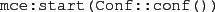
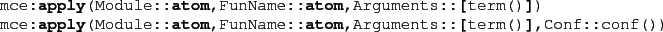
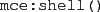

Running McErlang
To execute a program under McErlang, one of the functions
in the mce module should be called. A convenient way
to start Erlang with all the modules comprising the McErlang tool
available is to run the script mcerl.
Functions for starting McErlang:
-

Starts McErlang using the configuration specified in Conf
(see below for details).
-

Starts McErlang using the configuration specified in Conf -
if specified - to check the specified function.
If a configuration is not provided, then a default one is used
(using a safety checking algorithm, not checking any monitor, ...).
-

Starts a rudimentary shell for experimenting (using a simulation algorithm)
with the McErlang tool.
Subsections
2010-07-05